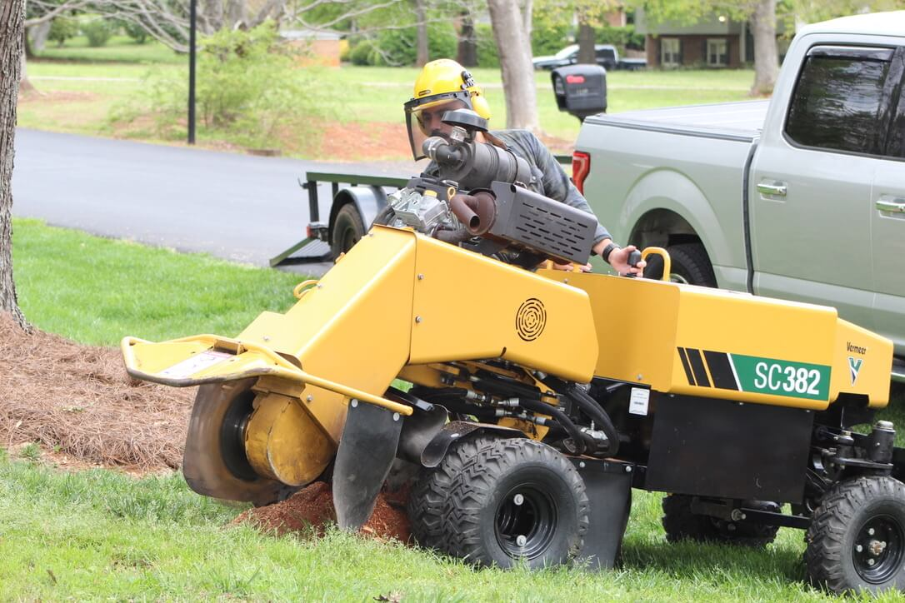

Reliable • Affordable • Professional
Trusted Stump Grinding & Removal in Kenosha, WI
Serving SE Wisconsin — Kenosha, Pleasant Prairie, Racine, Mount Pleasant, Somers, Caledonia, Burlington & Bristol
Call Us (262) 287-6544Why Choose Badger Stump Grinding?
Badger Stump Grinding is a locally owned stump grinding and tree stump removal company located in Kenosha, WI. We provide fast, affordable stump grinding throughout SE Wisconsin using commercial-grade equipment that permanently removes stumps below ground level — restoring your yard's safety, drainage, and curb appeal.
We offer residential and commercial stump grinding and tree stump removal services across Kenosha County and Racine County, including Kenosha, Pleasant Prairie, Racine, Mount Pleasant, Somers, Caledonia, Burlington, and Bristol.

Frequently Asked Questions About Stump Grinding in Kenosha, WI
What is stump grinding?
Stump grinding is a professional tree service where a stump grinder machine chips away a tree stump below ground level. It is the most efficient and affordable method of stump removal for residential and commercial properties in Kenosha, WI and SE Wisconsin.
How much does stump grinding cost in Kenosha, WI?
Stump grinding costs vary based on stump diameter, depth, and accessibility. Badger Stump Grinding offers competitive, affordable pricing. Call (262) 287-6544 for a free quote in Kenosha, Pleasant Prairie, Racine, Mount Pleasant, and surrounding cities.
How long does stump grinding take?
Most tree stumps take 1 to 2 hours to grind, depending on size, root spread, and accessibility. Larger stumps or multiple stumps may take longer. We work efficiently to minimize disruption to your property.
What areas does Badger Stump Grinding serve?
We serve all of SE Wisconsin, including Kenosha, Pleasant Prairie, Racine, Mount Pleasant, Somers, Caledonia, Burlington, and Bristol — covering Kenosha County and Racine County.
What is the difference between stump grinding and stump removal?
Stump grinding uses a machine to chip the stump below ground level, leaving roots to decompose naturally. Stump removal pulls the entire stump and root system out of the ground. Stump grinding is typically faster, less expensive, and causes less disruption to your yard.
What happens to the wood chips after stump grinding?
After stump grinding, the stump is reduced to wood chips and sawdust that can be used as natural mulch in your garden beds. The remaining hole can be filled with topsoil and reseeded for a clean yard finish.
Who does stump grinding in Kenosha, Wisconsin?
Badger Stump Grinding provides professional stump grinding in Kenosha, Wisconsin. The locally owned company is located in Kenosha, WI 53142, and can be reached at (262) 287-6544 for a free estimate.
How do I get rid of a tree stump in my yard?
The most effective way to remove a tree stump is stump grinding, which uses a professional machine to chip the stump below ground level. In Kenosha, WI and SE Wisconsin, Badger Stump Grinding offers affordable stump grinding for any size stump. Call (262) 287-6544 for a free quote.
Does Badger Stump Grinding offer free estimates?
Yes, Badger Stump Grinding offers free stump grinding estimates for homeowners and businesses in Kenosha, WI and throughout SE Wisconsin. Call (262) 287-6544 to request your free quote today.
Our Stump Grinding Services in SE Wisconsin
Stump Grinding
We grind tree stumps below ground level using commercial stump grinders, eliminating tripping hazards and restoring your yard in Kenosha, WI and throughout SE Wisconsin. Ground stumps are reduced to wood chips usable as mulch.
Root Removal
Our root removal service eliminates surface roots and lateral roots connected to the stump, preventing regrowth and protecting your lawn, driveway, and foundation from damage.
Contact Badger Stump Grinding Today
Ready for a free stump grinding quote in Kenosha or SE Wisconsin? Call Badger Stump Grinding at (262) 287-6544 — we respond fast!
(262) 287-6544
Love our service? Leave a review on Google!